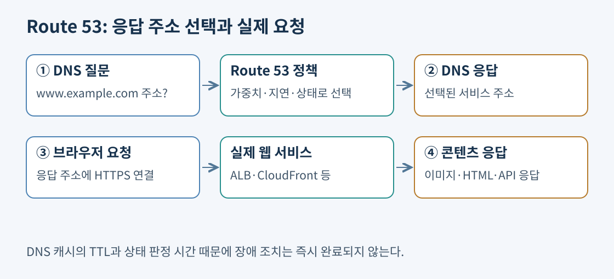
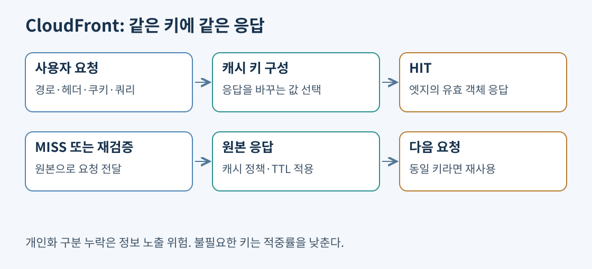
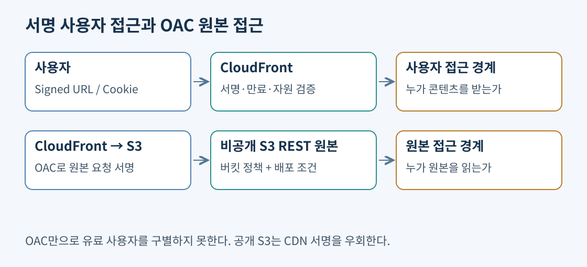

브라우저에 www.example.com을 입력하면 먼저 접속할 주소를 알아야 한다. DNS는 도메인 이름에 대한 레코드를 찾아 응답하는 시스템이다. Route 53은 권한 있는 DNS, 도메인 등록, 상태 확인 등의 기능을 제공한다. DNS 응답이 끝난 뒤 실제 웹 요청은 브라우저가 해당 대상으로 보낸다. Route 53이 이미지나 동영상 내용을 대신 전달하는 것은 아니다.
Hosted zone은 도메인의 DNS 레코드를 관리하는 영역이다. 공개 hosted zone은 인터넷에서 조회하며 비공개 hosted zone은 연결된 VPC 등 허용된 내부 환경에서 사용한다. 사내 DB 이름과 인터넷용 웹 이름의 공개 범위를 섞지 않는다. 도메인을 등록한 곳과 DNS를 운영하는 곳은 다를 수 있으며 상위 영역의 name server 위임이 맞아야 한다.
| 레코드 | 값의 의미 | 사용 예 |
|---|---|---|
| A | IPv4 주소 | 서버의 IPv4 |
| AAAA | IPv6 주소 | IPv6 지원 접속 |
| CNAME | 다른 DNS 이름 | www를 다른 호스트 이름에 연결 |
| Alias | Route 53이 지원 대상으로 해석 | 루트 도메인을 ALB·CloudFront에 연결 |
CNAME은 다른 이름을 가리키며 zone apex인 example.com에는 사용할 수 없다. Alias는 Route 53의 확장 기능으로 apex에서도 지원되는 AWS 리소스 등을 대상으로 지정할 수 있다. ALB 주소 뒤의 IP는 바뀔 수 있으므로 현재 보이는 IP를 복사해 고정 A 레코드로 만드는 것보다 지원되는 Alias 연결을 사용한다. Alias가 모든 인터넷 도메인에 대한 범용 CNAME 대체 기능은 아니다.
출처: Route 53 개요, Alias와 일반 레코드, 공개·비공개 hosted zone
같은 이름의 서비스가 여러 리전이나 여러 버전에 존재하면 어떤 주소를 응답할지 정해야 한다. Route 53의 라우팅은 패킷을 직접 중계하는 네트워크 라우터와 다르다. DNS 질문에 응답할 대상을 고르는 방식이다.

| 정책 | 선택 기준 | 구체적 사용 예 |
|---|---|---|
| Simple | 단순한 대상 응답 | 단일 웹 서비스 |
| Weighted | 설정한 상대 가중치 | 새 버전에 일부 DNS 응답 배정 |
| Latency | AWS가 관측한 지연 특성 | 여러 리전 중 낮은 지연의 리전 |
| Failover | 주 대상과 대기 대상의 상태 | 주 리전 장애 시 대기 리전 |
| Geolocation | 사용자 위치 | 국가·대륙별 콘텐츠 경로 |
| Geoproximity | 리소스 위치와 bias | 특정 리전의 담당 범위 확대 |
| Multivalue answer | 여러 정상 주소 응답 | 상태를 확인한 여러 서버 주소 |
Weighted에서 90:10으로 설정해도 모든 HTTP 요청이 정확히 90:10으로 나뉘는 것은 아니다. DNS 캐시와 하나의 응답을 재사용하는 사용자 수가 다르기 때문이다. 정밀한 요청 단위 분산이 필요하다면 로드 밸런서 등 해당 계층의 기능을 검토한다.
Latency는 물리적으로 가장 가까운 국가를 고르는 정책과 다르다. 네트워크 지연이 기준이다. Geolocation은 국가·대륙별 경로 같은 위치 규칙이며, 매칭되지 않은 사용자에 대한 기본 레코드도 고려한다. Geoproximity의 bias는 지리적 담당 범위를 조정하므로 가중치 기반 백분율과 구분한다.
출처: 라우팅 정책, Weighted, Latency, Geolocation, Geoproximity
Failover를 사용하려면 정상 여부를 판별할 방법과 실제 대기 서비스가 있어야 한다. 헬스 체크의 실패 판정에도 관측 시간이 필요하다. 일부 Alias 대상은 Evaluate Target Health로 대상의 상태를 이용할 수 있다. 별도의 HTTP 헬스 체크와 같은 설정으로 보지 않는다.
TTL은 DNS 응답을 캐시에 얼마나 보관할 수 있는지 나타낸다. 주 서버가 실패해 Route 53이 대기 주소를 응답하기 시작해도 이미 주 주소를 캐시한 클라이언트는 한동안 예전 대상으로 갈 수 있다. 기존 TCP 연결이 DNS 변경으로 즉시 다른 서버에 옮겨지는 것도 아니다. 낮은 TTL은 변경 반영을 빠르게 할 수 있지만 DNS 조회량과 비용을 늘릴 수 있다.
Multivalue는 정상 주소를 여러 개 응답하는 기능이며 ALB의 요청 단위 분산·연결 관리 기능을 대체하지 않는다. 또한 “헬스 체크가 있으면 어떤 장애 조건에서도 반드시 정상 서버만 응답한다”로 외우지 않는다. 모든 레코드가 비정상인 경우의 정책 동작도 따로 확인해야 한다.
출처: DNS 장애 조치, TTL, Multivalue
CloudFront는 사용자가 가까운 엣지에서 콘텐츠를 받게 하는 CDN이다. 원본(origin)은 실제 데이터를 제공하는 S3, ALB, 웹 서버 등이다. 원본이 서울에 있어도 해외 사용자가 반복적으로 같은 이미지를 가져갈 때 매번 서울까지 왕복하지 않도록 캐시한다.
캐시에 유효한 객체가 있으면 hit로 응답한다. 없거나 만료되어 원본 확인이 필요하면 miss 또는 재검증 흐름을 거친다. TTL과 원본의 Cache-Control 등은 객체가 얼마나 오래 재사용될지에 영향을 준다. 원본을 갱신했어도 엣지의 기존 객체가 바로 사라지지는 않는다. 파일명에 버전을 넣거나 필요한 경우 invalidation을 사용한다.

이미지와 CSS 같은 정적 파일은 캐시하기 좋다. CloudFront는 동적 HTTP 요청의 전송에도 사용할 수 있지만 모든 응답을 캐시해야 한다는 뜻은 아니다. /images/*와 /account/*처럼 경로별 cache behavior를 나누고 서로 다른 정책을 적용할 수 있다.
출처: CloudFront 동작, 만료 관리, 캐시 동작
캐시 키는 “어떤 요청을 같은 응답으로 취급할 것인가”를 정한다. 경로 외에 헤더·쿠키·쿼리 문자열의 필요한 값들을 포함할 수 있다. 언어에 따라 내용이 달라지는 페이지라면 언어 구분이 필요하고, 단순한 추적 파라미터가 응답을 바꾸지 않는다면 그것까지 포함할 필요는 없을 수 있다.
| 설정 실수 | 결과 | 조정 방향 |
|---|---|---|
| 사용자별 응답인데 사용자 구분 누락 | 다른 사용자에게 응답 노출 위험 | 해당 경로 캐시 비활성화 또는 안전한 분리 |
| 불필요한 모든 쿠키·헤더 포함 | 키 종류 증가, 적중률 감소 | 실제 응답을 바꾸는 값만 선택 |
| 원본에 필요한 인증 값 전달 누락 | 인증 실패·잘못된 응답 | origin request policy 등 확인 |
| 개인 응답에 긴 최소 TTL | 원본의 캐시 제한 의도와 충돌 | 최소 TTL과 private/no-store 동작 확인 |
캐시 정책은 캐시 키와 TTL을 정하고, origin request policy는 원본으로 전달할 추가 요청 정보를 다룬다. “원본에 전달한다”와 “캐시 키에 넣는다”는 같은 말이 아니다. 인증 헤더와 쿠키는 일반 헤더처럼 무조건 전달·캐시한다고 가정하지 말고 지원되는 설정과 동작을 확인한다. 로그인 계정 화면은 처음에는 캐시하지 않는 구성이 더 단순할 수 있다.
출처: 캐시 키 정책, Origin request policy, Authorization 헤더
사용자에서 CloudFront까지와 CloudFront에서 원본까지는 별도 연결이다. 사용자 HTTPS만 켜고 원본 연결은 HTTP로 두면 전체 경로가 암호화된 것은 아니다. viewer protocol policy와 origin protocol policy를 각각 정한다. 사용자 도메인의 인증서와 원본 인증서의 호스트 이름·유효성도 맞아야 한다.
원본에 정보를 전달하는 것과 캐시 키로 응답을 분리하는 것은 다르다. 언어별 매뉴얼은 lang을 키에 넣고 응답에 영향 없는 tracking은 키에서 빼되 미스 시 원본 전달 정책으로 보낼 수 있다. 계정 화면은 캐시를 비활성화하고 인증 정보를 전달한다. 최소 TTL이 양수면 원본의 private·no-cache·no-store에도 캐시할 수 있으므로 헤더만 붙여 해결하지 않는다.
CloudFront viewer용 ACM 인증서는 us-east-1에 두고 원본 ALB 인증서는 해당 ALB 리전에 둔다. 두 TLS 연결의 프로토콜·호스트 이름을 따로 맞춘다. Route 53 공개 상태 확인기는 private DB를 직접 검사할 수 없다. 내부 쓰기 검사 지표→CloudWatch 알람→Route 53 상태 확인으로 연결하거나 공개 앱의 상태 경로에 실제 쓰기 가능 여부를 반영한다. 읽기만 성공하는 /health는 read-only 사고를 놓칠 수 있다.
DNS 전환·캐시 정책·TLS와 권한의 실제 구성에는 오래된 DNS 캐시와 기존 연결, 구매자 서명과 원본 인증을 분리한 요청 흐름을 설명한다.
출처: TTL과 private 헤더, 인증서 리전, 비공개 상태 확인
유료 강의 파일을 S3에 저장하고 CloudFront로 제공한다고 하자. 사용자가 CloudFront를 거치지 않고 S3 URL로 파일을 가져갈 수 있으면 CloudFront의 접근 제한을 우회한다. 원본 버킷을 비공개로 두고 허용한 CloudFront 배포만 객체를 읽게 해야 한다.
OAC(Origin Access Control)는 CloudFront가 S3 원본으로 보내는 요청에 인증 정보를 붙이는 기능이다. S3 버킷 정책은 CloudFront 서비스 주체를 허용하고 SourceArn 조건으로 의도한 배포를 제한하는 식으로 구성한다. OAC를 연결했다는 사실만으로 버킷 정책의 권한이 자동으로 모두 맞아지는 것은 아니다. 퍼블릭 읽기를 열어 두면 별도 우회 경로가 남을 수 있다.

S3 REST 버킷 원본과 S3 static website endpoint는 다르다. website endpoint는 CloudFront에서 custom origin으로 사용하며 OAC·OAI를 사용할 수 없다. 비공개 버킷과 OAC를 사용하려면 S3 버킷 원본을 선택한다. 웹사이트 리다이렉트 같은 website endpoint 기능을 쓰려면 해당 방식의 접근·프로토콜 조건을 별도로 검토해야 한다.
SSE-KMS 객체라면 S3 읽기 권한뿐 아니라 KMS 키 정책의 허용도 필요하다. 여기서 S3 버킷 정책은 “CloudFront가 원본을 읽어도 되는가”를 판단한다. 최종 사용자가 강의 구매자인지는 알지 못한다.
출처: S3 원본 접근 제한과 OAC, S3 웹사이트 엔드포인트, S3 퍼블릭 접근 차단
앱은 로그인과 결제 기록을 확인한 뒤 접근을 허용할 사용자에게 제한된 CloudFront 서명 정보를 발급할 수 있다. CloudFront는 신뢰하는 키 그룹의 공개 키로 서명을 검증하고 정책의 자원·기간 등 조건을 확인한다. 비공개 키는 서명을 만드는 쪽에서 안전하게 보관한다.
| 방식 | 검증하는 곳 | 잘 맞는 요구 |
|---|---|---|
| CloudFront signed URL | CloudFront | 특정 다운로드 파일에 제한된 링크 |
| CloudFront signed cookie | CloudFront | URL을 바꾸지 않고 여러 강의 파일 접근 |
| S3 presigned URL | S3 | S3 객체에 대한 한정된 직접 읽기·업로드 |
| OAC | S3 원본 요청 | 특정 CloudFront 배포의 원본 접근 |
강의 영상이 여러 조각으로 나뉘면 서명 쿠키로 여러 제한 파일의 접근을 허용하는 방식이 편할 수 있다. 단일 PDF 다운로드는 서명 URL이 단순할 수 있다. 서명 URL을 다른 사람에게 전달하면 만료 전까지 그 사람이 사용할 수 있으므로 링크 자체를 접근 자격으로 취급한다. 로그에 서명값을 불필요하게 노출하지 않는다.
출처: CloudFront 서명 URL, 서명 쿠키, 신뢰하는 키 그룹
S3 presigned URL은 발급자의 S3 권한을 기반으로 특정 작업을 한정해 허용한다. CloudFront의 사용자 접근 정책과 같은 서명이 아니다. 예를 들어 사용자의 프로필 사진 업로드를 S3 presigned PUT으로 허용하면 앱 서버가 파일 본문을 중계하지 않아도 된다. CloudFront signed URL을 발급했다고 사용자가 S3에 직접 업로드할 권한이 생기지는 않는다.
유료 영상 구성에는 사용자→CloudFront의 접근 검증과 CloudFront→S3의 원본 인증이 함께 필요하다. OAC만 적용하면 원본은 보호되지만 CloudFront 주소를 아는 모든 사용자에게 공개된 콘텐츠일 수 있다. 반대로 CloudFront 서명만 요구하고 S3가 공개라면 원본 주소로 우회할 수 있다.
출처: S3 presigned URL, 비공개 CloudFront 콘텐츠
| 서비스 | 처리 계층과 역할 | 대표 조건 |
|---|---|---|
| Route 53 | DNS 응답 대상 선택 | 도메인 연결, 리전 선택, DNS 장애 조치 |
| CloudFront | HTTP·HTTPS 전송과 객체 캐시 | 정적 콘텐츠, 웹 배포, 비공개 다운로드 |
| Global Accelerator | 정적 Anycast IP와 AWS 네트워크 경로 | TCP·UDP 앱, 고정 IP 요구, 빠른 경로 전환 |
| S3 Transfer Acceleration | 먼 거리에서 특정 S3 버킷으로 전송 가속 | 글로벌 사용자 대용량 업로드 |
Global Accelerator의 정적 Anycast IP는 여러 엣지에서 같은 주소를 알리고 사용자를 AWS 네트워크 진입점으로 유도한다. 표준 accelerator는 정상 endpoint로 트래픽을 보내며, 애플리케이션 대상은 ALB·NLB·EC2·Elastic IP 등 지원 리소스다. TCP·UDP 통신을 지원하므로 웹 객체 캐시가 없는 실시간 게임 같은 조건도 검토할 수 있다.
Global Accelerator는 이미지 객체를 저장해 원본 요청을 줄이는 CDN 캐시가 아니다. 반대로 CloudFront는 모든 TCP·UDP 프로토콜의 범용 가속기가 아니다. 방화벽 허용 목록에 고정 진입 IP가 필요하다는 요구와 동영상 캐시 적중률을 높이고 싶다는 요구는 서로 다르다. Route 53은 이름을 통해 이들 대상으로 연결하는 데 함께 쓰일 수 있다.
출처: Global Accelerator, 지원 endpoint, CloudFront
S3 Transfer Acceleration은 엣지와 AWS 네트워크를 이용해 클라이언트와 S3 버킷 사이 장거리 전송을 개선한다. 업로드가 많은 앱에서 검토하되 CDN처럼 사용자에게 객체 복사본을 캐시해 주는 기능으로 보지 않는다. 가까운 거리·작은 파일 등에서는 추가 비용에 비해 효과가 적을 수 있으므로 실제 경로를 측정한다. 버킷과 가속 endpoint 조건은 3일 차 저장소와 연결해 살펴본다.
해외 사용자 1만 명이 같은 큰 이미지 파일을 반복해서 받는다면 CloudFront 캐시로 원본 전송과 서버 부하를 줄일 여지가 크다. 반면 모든 응답이 사용자마다 다르고 매번 바뀌면 적중률이 낮을 수 있다. 캐시 키에 불필요한 추적 값까지 포함해 응답을 수천 개로 나누면 같은 이미지인데도 원본 요청이 반복된다.
캐시를 쓴다고 모든 비용이 사라지는 것은 아니다. CloudFront 사용자 전송량·요청, 원본 요청, invalidation 등 적용되는 항목을 확인한다. 리전·계층 간 전송과 NAT 경유 여부도 경로에 따라 비용에 영향을 줄 수 있다. 데이터가 실제로 어떤 구간을 지나가는지 그린 뒤 비용을 비교하는 것이 정확하다.
서버를 크게 만드는 것보다 정적 파일을 캐시에 두어 원본 요청 자체를 줄이는 편이 효과적일 수 있다. 그러나 계정 정보까지 무리하게 캐시해 정확성과 보안을 희생하면 안 된다. 조회·다운로드 캐시는 이미 들어온 쓰기 요청 폭주를 제한하는 기능도 아니다. API의 요청 제한이 필요하면 API Gateway throttling이나 WAF의 rate-based rule처럼 해당 계층의 제어를 함께 검토한다.
| 상황 | 먼저 볼 항목 |
|---|---|
| 이미지 다운로드가 느리고 원본 대역폭 포화 | 캐시 적중률·객체 크기·전송 경로 |
| 새 버전 배포 뒤 예전 JS가 계속 보임 | TTL·파일명 버전·invalidation |
| 사용자마다 원본 호출이 과도함 | 개인화 필요 범위·캐시 키의 불필요한 값 |
| 쓰기 API로 비정상 요청 폭주 | 요청 제한·인증·백엔드 보호 |
| DB 장애 뒤 DNS 변경이 늦게 보임 | 헬스 체크 판정·TTL·앱 재연결 |
출처: CloudFront 요금, 캐시 적중률, API Gateway throttling, WAF rate-based rule
공식 자료 확인일: 2026-11-02